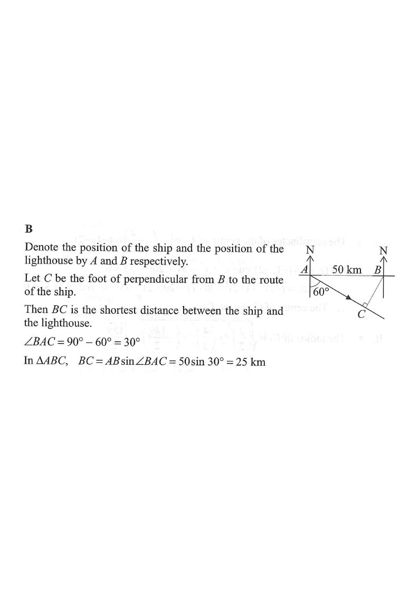

A ship is 50 km due west of a lighthouse. If the ship moves in the direction S 60° E, find the shortest distance between the ship and the lighthouse.

Denote the position of the ship by $B$ and the position of the lighthouse by $A$.
Since the ship is 50 km due west of the lighthouse, we have:
$AB = 50$ km
From $B$, the direction S 60° E means: start facing South, then turn 60° towards the East.
So the route $BC$ makes an angle of $60^\circ$ with the southward direction of the North–South line at $B$.
Let $C$ be the foot of the perpendicular from $A$ (lighthouse) to the route of the ship.
Then $BC$ is the shortest distance between the ship and the lighthouse — because the perpendicular from a point to a line gives the shortest distance.
The route runs at 60° from the South direction, so $BC$ makes $60^\circ$ with the North–South line at $B$.
The line $AB$ is horizontal (East–West) and meets the North line at $B$ at $90^\circ$.
Therefore in $\triangle ABC$:
$\angle BAC = 90^\circ - 60^\circ = 30^\circ$
In $\triangle ABC$ (right angle at $C$):
$BC = AB \sin \angle BAC$
$BC = 50 \sin 30^\circ$
$BC = 50 \times 0.5 = 25$ km